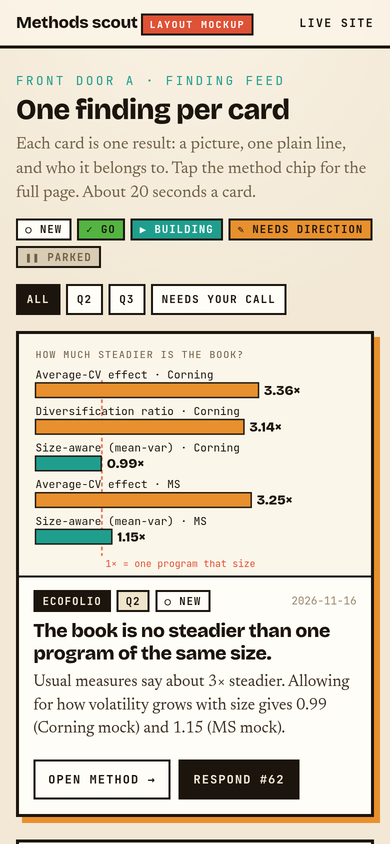
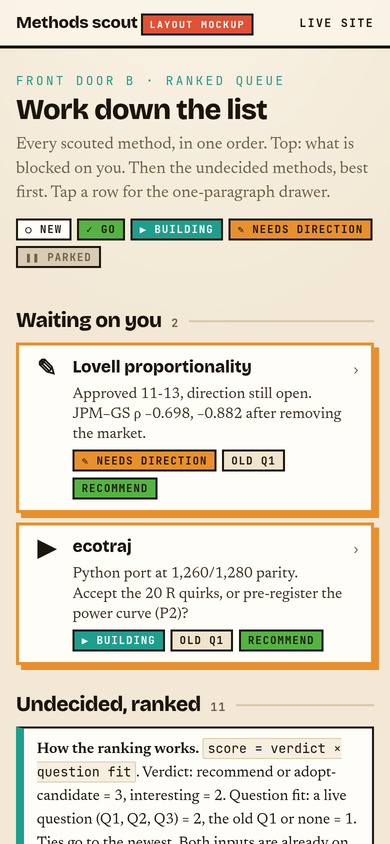
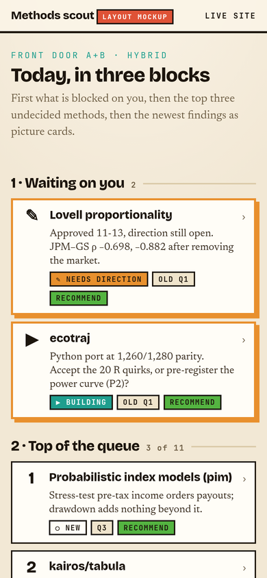
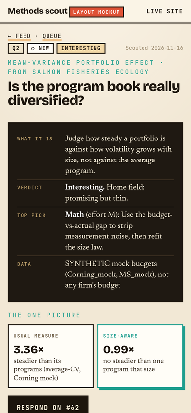
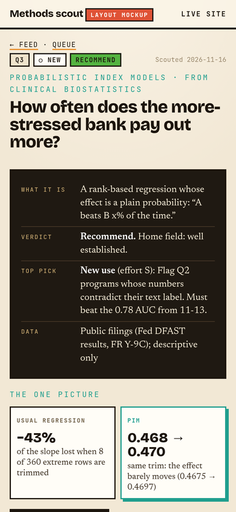
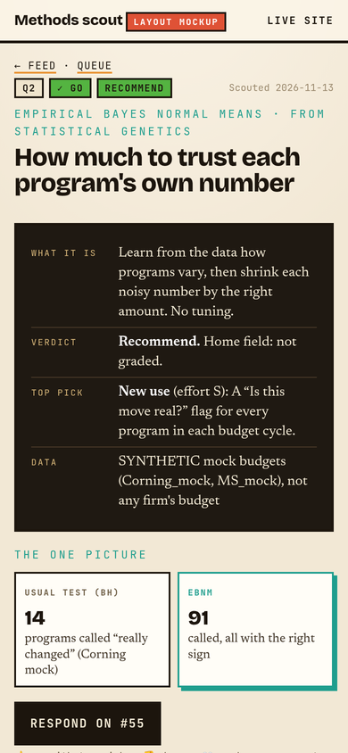
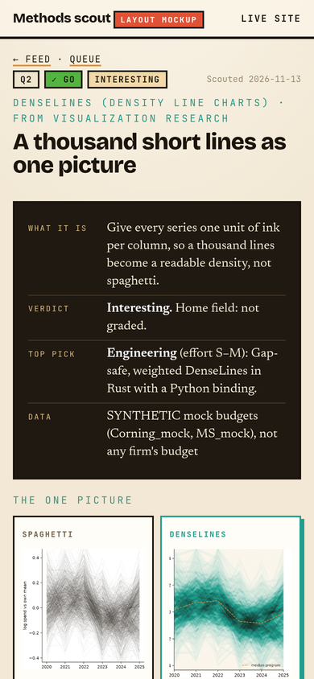

Layout proposals · 2026-11-17
A cleaner scout
Settled: one page per method (C), with a 3-second summary and tabs. Open: which front door leads into those pages. Three options below, each built with real scout content and screenshotted at phone width.
○ New✓ Go▶ Building✎ Needs direction❚❚ Parked✕ Dropped★ Promoted
One icon and one plain word per status, everywhere. Chips refresh from the GitHub issue labels on load.
Pick a front door

Front door A- One result per card: picture, one line, method · question · status chips.
- Best for “what did we learn?” on the commute.
- Filter: Q2 · Q3 · Needs your call (no JS).
Open

Front door B- Every method in one ordered list; Waiting on you at the top.
- Rank = verdict × question fit, shown on each row.
- Tap a row: drawer with top pick, Respond, method page.
Open

Front door A+B- Waiting on you → top 3 of the queue → newest finding cards.
- One screen answers “what do you need from me?” and “what's new?”.
- Full queue and full feed one tap away.
Open
The base: one page per method (C)
Top of every method page: what it is (one line), verdict, top pick, data, then the one picture as a “usual tool vs this method” pair, then one big Respond button. Everything else sits behind tabs: Findings · How it works · Robust at home · Secret sauce · Questions.

C · method pageIs the program book really diversified?

C · method pageHow often does the more-stressed bank pay out more?

C · method pageHow much to trust each program's own number

C · method pageA thousand short lines as one picture
Borrowed from the Nitro proposals site
- One card = one thing. Picture first, one-line why, a status chip, one button. No paragraphs on the front door.
- “Today vs proposed” picture pairs. Nitro shows today's screen next to the mockup; we show the usual tool's answer next to the borrowed method's.
- Status is a chip that updates itself from the issue (Nitro's
status.js), with a vote button and a one-line how-to on every card and at the top and bottom of every detail page.
- Index → one page per item. Nitro links each card to
p/<slug>.html; that is the method page here.
Kept ours: the paper-and-ink theme, fonts, hard shadows and the Respond-on-GitHub loop. No Nitro branding or wording was copied.
Word budgets (enforced by the build)
- Finding headline ≤ 14 words; takeaway ≤ 32 words.
- Queue one-liner ≤ 20 words; “what it is” and “top pick” ≤ 22 words.
- Charts are drawn at 360 px wide with labels above bars, so nothing is unreadable on a phone.
Recommendation
Hybrid front door, on top of the per-method pages.
- Waiting on you first, because the daily loop only moves when you react.
- Top 3 of the ranked queue, so the order is decided for you, without a 17-row list every morning.
- Newest finding cards last, because one picture plus one line is the fastest way to grasp a method.
- The full feed and the full queue stay one tap away, and the dated editions stay as the archive.
Next step if you like one: switch the daily generator to write a method page per method plus the chosen front door, and keep the dated pages as the archive. Nothing on the live site changed yet.